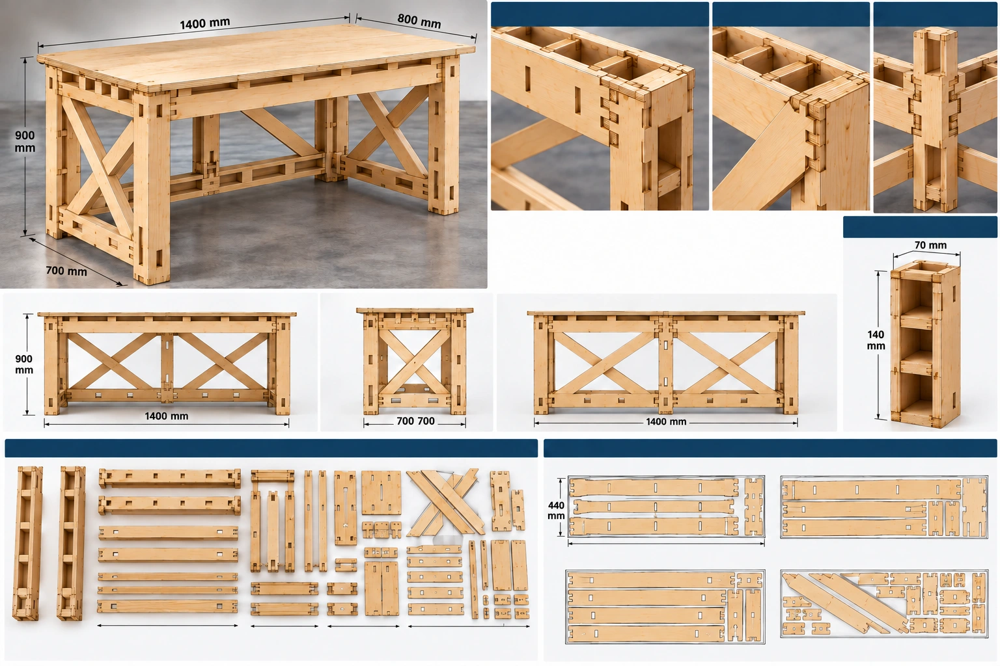

שלד וחיזוקים
קורות עליונות ותחתונות מתחברות לעמודים. אלכסונים מוצלבים מופיעים במבטים השונים כחלק מתכנון חיזוק השלד.
אובייקט 05 / סביבת עבודה
בתכנון ופיתוח
שולחן עבודה
שולחן עבודה בתכנון, הבנוי מלוחות עץ עם שלד מחוזק באלכסונים מוצלבים. ההדמיה מציגה את המבנה, פרטי החיבורים ופריסת החלקים לקראת הבנייה.
המידות מבוססות על דף התכנון המצורף. המוצר עדיין בבנייה; התמונה היא הדמיה, ותמונות המוצר המוגמר יתווספו בהמשך.

הגליון מציג הדמיה כללית, מבטי חזית, צד ואחור, תקריבים של חיבורי הקורות והעמודים, חתך העמוד ופריסת חלקים לחיתוך.
תהליך הבנייה / תכנון
דף התכנון מרכז את ההדמיה ואת פרטי המבנה לפני ההרכבה. כל מבט חושף חלק אחר במערכת: הקורות, העמודים, האלכסונים והחיבורים ביניהם.
קורות עליונות ותחתונות מתחברות לעמודים. אלכסונים מוצלבים מופיעים במבטים השונים כחלק מתכנון חיזוק השלד.
התקריבים מציגים חיבור של קורה אופקית לעמוד, חיבור אלכסון לקורה ועמוד מרכזי אחורי, לצד חתך של קורה הנדסית.
הפריסה מציגה בנפרד עמודים, קורות, אלכסונים וחלקי חיבור וחיזוק, יחד עם דוגמאות לסידור החלקים על לוחות לחיתוך.
התאמת מידות
רוצים לבדוק התאמת מידות לשולחן העבודה? אפשר לפנות עם המידות והשימוש הרצוי ולדון בהתאמת המבנה והחיבורים במסגרת התכנון.